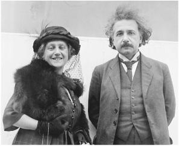

With Elsa, June 1922
“The Narrow Whirlpool of Personal Experience”
As a young man, Einstein had predicted, in a letter to the mother of his first girlfriend, that the joys of science would be a refuge from painful personal emotions. And thus it was. His conquest of general relativity proved easier than finding the formulas for the forces swirling within his family.
Those forces were complex. At the very moment he was finalizing his field equations—the last week of November 1915—his son Hans Albert was telling Michele Besso that he wanted to spend time alone with his father over Christmas, preferably on Zugerberg mountain or someplace similarly isolated. But simultaneously, the boy was writing his father a nasty letter saying he did not want him to come to Switzerland at all.1
How to explain the contradiction? Hans Albert’s mind seemed at times to display a duality—he was, after all, only 11—and he had powerfully conflicted attitudes toward his father. That was no surprise. Einstein was intense and compelling and at times charismatic. He was also aloof and distracted and had distanced himself, physically and emotionally, from the boy, who was guarded by a doting mother who felt humiliated.
The stubborn patience that Einstein displayed when dealing with scientific problems was equaled by his impatience when dealing with personal entanglements. So he informed the boy he was canceling the trip. “The unkind tone of your letter dismays me very much,” Einstein wrote just days after finishing his last lecture on general relativity. “I see that my visit would bring you little joy, therefore I think it’s wrong to sit in a train for two hours and 20 minutes.”
There was also the question of a Christmas present. Hans Albert had become an avid little skier, and Mari gave him a set of equipment that cost 70 francs. “Mama bought them for me on condition that you also contribute,” he wrote. “I consider them a Christmas present.” This did not please Einstein. He replied that he would send him a gift in cash, “but I do think that a luxury gift costing 70 francs does not match our modest circumstances,” Einstein wrote, underlining the phrase.2
gave him a set of equipment that cost 70 francs. “Mama bought them for me on condition that you also contribute,” he wrote. “I consider them a Christmas present.” This did not please Einstein. He replied that he would send him a gift in cash, “but I do think that a luxury gift costing 70 francs does not match our modest circumstances,” Einstein wrote, underlining the phrase.2
Besso put on what he called his “pastoral manner” to mediate. “You should not take serious offense at the boy,” he said. The source of the friction was Mari, Besso believed, but he asked Einstein to remember that she was composed “not only of meanness but of goodness.” He should try to understand, Besso urged, how difficult it was for Mari to deal with him. “The role as the wife of a genius is never easy.”3 In the case of Einstein, that was certainly true.
The anxiety surrounding Einstein’s proposed visit was partly due to a misunderstanding. Einstein had assumed that the plan to have him and his son meet at the Bessos’ had been arranged because Mari and Hans Albert wanted it that way. Instead, the boy had no desire to be a bystander while his father and Besso discussed physics. Just the opposite: he wanted his father to himself.
Mari ended up writing to clear up the matter, which Einstein appreciated. “I was likewise a bit disappointed that I would not get Albert to myself but only under Besso’s protection,” he said.
So Einstein reinstated his plan to visit Zurich, and he promised it would be one of many such trips to see his son. “[Hans] Albert* is now entering the age at which I can mean very much to him,” he said. “I want mainly to teach him to think, judge and appreciate things objectively.” A week later, in another letter to Mari, he reaffirmed that he was happy to make the trip, “for there is a faint chance that I’ll please Albert by coming.” He did, however, add rather pointedly, “See to it that he receives me fairly cheerfully. I am quite tired and overworked, and not capable of enduring new agitations and disappointments.”4
It was not to be. Einstein’s exhaustion lingered, and the war made the border crossing from Germany difficult. Two days before Christmas of 1915, when he was supposed to be departing for Switzerland, Einstein instead wrote his son a letter. “I have been working so hard in the last few months that I urgently need a rest during the Christmas holidays,” he said. “Aside from this, coming across the border is very uncertain at present, since it has been almost constantly closed recently. That is why I must unfortunately deprive myself of visiting you now.”
Einstein spent Christmas at home. That day, he took out of his satchel some of the drawings that Hans Albert had sent him and wrote the boy a postcard saying how much they pleased him. He would come for Easter, he promised, and he expressed delight that his son enjoyed playing piano. “Maybe you can practice something to accompany a violin, and then we can play at Easter when we are together.”5
After he and Mari separated, Einstein had initially decided not to seek a divorce. One reason was that he had no desire to marry Elsa. Companionship without commitment suited him just fine. “The attempts to force me into marriage come from my cousin’s parents and is mainly attributable to vanity, though moral prejudice, which is still very much alive in the old generation, plays a part,” Einstein wrote Zangger the day after presenting his climactic November 1915 lecture. “If I let myself become trapped, my life would become complicated, and above all it would probably be a heavy blow for my boys. Therefore, I must allow myself not to be moved either by my inclination or by tears, but must remain as I am.” It was a resolution he repeated to Besso as well.6
Besso and Zangger agreed that he should not seek a divorce. “It is important that Einstein knows that his truest friends,” Besso wrote Zangger, “would regard a divorce and subsequent remarriage as a great evil.”7
But Elsa and her family kept pushing. So in February 1916, Einstein wrote Mari to propose—indeed, beg—that she agree to a divorce, “so that we can arrange the rest of our lives independently.” The separation agreement they had worked out with the help of Fritz Haber, he suggested, could serve as the basis for a divorce. “It will surely be possible to have the details settled to your satisfaction,” he promised. His letter also included instructions on how to keep their boys from suffering from calcium deficiency.8
When Mari resisted, Einstein became more insistent. “For you it involves a mere formality,” he said. “For me, however, it is an imperative duty.” He informed Mari that Elsa had two daughters whose reputations and chances of marriage were being compromised by “the rumors” that were circulating about the illicit relationship their mother was having with Einstein. “This weighs on me and ought to be redressed by a formal marriage,” he told Mari. “Try to imagine yourself in my position for once.”
As an enticement, he offered more money. “You would gain from this change,” he told Mari. “I wish to do more than I had obligated myself to before.” He would transfer 6,000 marks into a fund for the children and increase her payments to 5,600 marks annually. “By making myself such a frugal bed of straw, I am proving to you that my boys’ well-being is closest to my heart, above all else in the world.”
In return, he wanted the right to have his sons visit him in Berlin. They would not come into contact with Elsa, he pledged. He even added a somewhat surprising promise: he would not be living with Elsa even if they got married. Instead, he would keep his own apartment. “For I shall never give up the state of living alone, which has manifested itself as an indescribable blessing.”
Mari did not consent to give him the right to have the boys visit him in Berlin. But she did tentatively agree—or at least so Einstein thought—to allow the start of divorce discussions.9
As he had promised Hans Albert, Einstein arrived in Switzerland in early April 1916 for a three-week Easter vacation, moving into a hotel near the Zurich train station. Initially, things went very well. The boys came to see him and greeted him joyously. From his hotel, he sent Mari a note of thanks:
My compliments on the good condition of our boys. They are in such excellent physical and mental shape that I could not have wished for more. And I know that this is for the most part due to the proper up-bringing you provide them. I am likewise thankful that you have not alienated me from the children. They came to meet me spontaneously and sweetly.
Mari sent word that she wanted to see Einstein herself. Her goal was to be assured that he truly wanted a divorce and was not merely being pressured by Elsa. Both Besso and Zangger tried to arrange such a meeting, but Einstein declined. “There would be no point in a conversation between us and it could serve only to reopen old wounds,”s he wrote in a note to Mari.10
Einstein took Hans Albert off alone, as the boy wished, for what was planned as a ten-day hiking excursion in a mountain resort overlooking Lake Lucerne. There they were caught in a late-season snowstorm that kept them confined to the inn, which initially pleased them both. “We are snowed in at Seelisberg but are enjoying ourselves immensely,” Einstein wrote Elsa. “The boy delights me, especially with his clever questions and his undemanding way. No discord exists between us.” Unfortunately, soon the weather, and perhaps also their enforced togetherness, became oppressive, and they returned to Zurich a few days early.11
Back in Zurich, the tensions revived. One morning, Hans Albert came to visit his father at the physics institute to watch an experiment. It was a pleasant enough activity, but as the boy was leaving for lunch, he urged his father to come by the house and at least pay a courtesy call on Mari.
Einstein refused. Hans Albert, who was just about to turn 12, became angry and said he would not come back for the completion of the experiment that afternoon unless his father relented. Einstein would not. “That’s how it remained,” he reported to Elsa a week later, on the day he left Zurich. “And I have seen neither of the children since.”12
Mari subsequently went into an emotional and physical melt-down. She had a series of minor heart incidents in July 1916, accompanied by extreme anxiety, and her doctors told her to remain in bed. The children moved in with the Bessos, and then to Lausanne, where they stayed with Mari’s friend Helene Savi, who was riding out the war there.
Besso and Zangger tried to get Einstein to come down from Berlin to be with his sons. But Einstein demurred. “If I go to Zurich, my wife will demand to see me,” he wrote Besso. “This I would have to refuse, partly on an inalterable resolve partly also to spare her the agitation. Besides, you know that the personal relations between the children and me deteriorated so much during my stay at Easter (after a very promising start) that I doubt very much whether my presence would be reassuring for them.”
Einstein assumed that his wife’s illness was largely psychological and even, perhaps, partly faked. “Isn’t it possible that nerves are behind it all?” he asked Zangger. To Besso, he was more blunt: “I have the suspicion that the woman is leading both of you kind-hearted men down the garden path. She is not afraid to use all means when she wants to achieve something. You have no idea of the natural craftiness of such a woman.”13 Einstein’s mother agreed. “Mileva was never as sick as you seem to think,” she told Elsa.14
Einstein asked Besso to keep him informed of the situation and made a stab at scientific humor by saying that his reports did not need to have logical “continuity” because “this is permissible in the age of quantum theory.” Besso was not sympathetic; he wrote Einstein a sharp letter saying Mari’s condition was not “a deception” but was instead caused by emotional stress. Besso’s wife, Anna, was even harsher, adding a postscript to the letter that addressed Einstein with the formal Sie.15
Einstein backed down from his charge that Mari was faking illness, but railed that her emotional distress was unwarranted. “She leads a worry-free life, has her two precious boys with her, lives in a fabulous neighborhood, does what she likes with her time, and innocently stands by as the guiltless party,” he wrote Besso.
Einstein was especially stung by the cold postscript, which he mistakenly thought came from Michele rather than Anna Besso. So he added his own postscript: “We have understood each other well for 20 years,” he said. “And now I see you developing a bitterness toward me for the sake of a woman who has nothing to do with you. Resist it!” Later that day he realized he had mistaken Anna’s harsh postscript for something her husband had written, and he quickly sent along another note apologizing to him.16
On Zangger’s advice, Mari checked into a sanatorium. Einstein still resisted going to Zurich, even though his boys were at home alone with a maid, but he told Zangger he would change his mind “if you think it’s appropriate.” Zangger didn’t. “The tension on both sides is too great,” Zangger explained to Besso, who agreed.17
Despite his detached attitude, Einstein loved his sons and would always take care of them. Please let them know, he instructed Zangger, that he would take them under his wing if their mother died. “I would raise the two boys myself,” he said. “They would be taught at home, as far as possible by me personally.” In various letters over the next few months, Einstein described his different ideas and fantasies for home-schooling his sons, what he would teach, and even the type of walks they would take. He wrote Hans Albert to assure him that he was “constantly thinking of you both.”18
But Hans Albert was so angry, or hurt, that he had stopped answering his father’s letters. “I believe that his attitude toward me has fallen below the freezing point,” Einstein lamented to Besso. “Under the given circumstances, I would have reacted in the same way.” After three letters to his son went unanswered in three months, Einstein plaintively wrote him: “Don’t you remember your father anymore? Are we never going to see each other again?”19
Finally, the boy replied by sending a picture of a boat he was constructing out of wood carvings. He also described his mother’s return from the sanatorium. “When Mama came home, we had a celebration. I had practiced a sonata by Mozart, and Tete had learned a song.”20
Einstein did make one concession to the sad situation: he decided to give up asking Mari for a divorce, at least for the time being. That seemed to aid her recovery. “I’ll take care that she doesn’t get any more disturbance from me,” he told Besso. “I have abandoned proceeding with the divorce. Now on to scientific matters!”21
Indeed, whenever personal issues began to weigh on him, he took refuge in his work. It shielded him, allowed him to escape. As he told Helene Savi, likely with the intent that it get back to her friend Mari, he planned to retreat into scientific reflection. “I resemble a farsighted man who is charmed by the vast horizon and whom the foreground bothers only when an opaque object prevents him from taking in the long view.”22
So even as the personal battle was raging, his science provided solace. In 1916, he began writing again about the quantum. He also wrote a formal exposition of his general theory of relativity, which was far more comprehensive, and slightly more comprehensible, than what had poured forth in the weekly lectures during his race with Hilbert the previous November.23
In addition, he produced an even more understandable version: a book for the lay reader, Relativity: The Special and the General Theory, that remains popular to this day. To make sure that the average person would fathom it, he read every page out loud to Elsa’s daughter Margot, pausing frequently to ask whether she indeed got it. “Yes, Albert,” she invariably replied, even though (as she confided to others) she found the whole thing totally baffling.24
This ability of science to be used as a refuge from painful personal emotions was a theme of a talk he gave at a celebration of Max Planck’s sixtieth birthday. Putatively about Planck, it seemed to convey more about Einstein himself. “One of the strongest motives that leads men to art and science is escape from everyday life with its painful crudity and hopeless dreariness,” Einstein said. “Such men make this cosmos and its construction the pivot of their emotional life, in order to find the peace and security which they cannot find in the narrow whirlpool of personal experience.”25
The Treaty
In early 1917, it was Einstein’s turn to fall ill. He came down with stomach pains that he initially thought were caused by cancer. Now that his mission was complete, death did not frighten him. He told the astronomer Freundlich that he was not worried about dying because now he had completed his theory of relativity.
Freundlich, on the other hand, did worry about his friend, who was still only 38. He sent Einstein to a doctor, who diagnosed the problem as a chronic stomach malady, one that was exacerbated by wartime food shortages. He put him on a four-week diet of rice, macaroni, and zwieback bread.
These stomach ailments would lay him low for the next four years, then linger for the rest of his life. He was living alone and having trouble getting proper meals. From Zurich, Zangger sent packages to help satisfy the prescribed diet, but within two months Einstein had lost close to fifty pounds. Finally, by the summer of 1917, Elsa was able to rent a second apartment in her building, and she moved him in there to be her neighbor, charge, and companion.26
Elsa took great joy in foraging for the food he found comforting. She was resourceful and wealthy enough to commandeer the eggs and butter and bread he liked, even though the war made such staples hard to come by. Every day she cooked for him, doted on him, even found him cigars. Her parents helped as well by having them both over for comforting meals.27
The health of his younger son, Eduard, also was precarious. Once again he had fevers, and in early 1917 his lungs became inflamed. After receiving a pessimistic medical prognosis, Einstein lamented to Besso, “My little boy’s condition depresses me greatly. It is impossible that he will become a fully developed person. Who knows if it wouldn’t be better for him if he could depart before coming to know life properly.”
To Zangger, he ruminated about the “Spartan’s method”—leaving sickly children out on a mountain to die—but then said he could not accept that approach. Instead, he promised to pay whatever it took to get Eduard care, and he told Zangger to send him to whatever treatment facility he thought best. “Even if you silently say to yourself that every effort is futile, send him anyway, so that my wife and my Albert think that something is being done.”28
That summer, Einstein traveled back to Switzerland to take Eduard to a sanatorium in the Swiss village of Arosa. His ability to use science to rise above personal travails was illustrated in a letter he sent to his physicist friend Paul Ehrenfest: “The little one is very sickly and must go to Arosa for a year. My wife is also ailing. Worries and more worries. Nevertheless, I have found a nice generalization of the Sommerfeld-Epstein quantum law.”29
Hans Albert joined his father on the journey to take Eduard to Arosa, and he then visited when Einstein was staying with his sister, Maja, and her husband, Paul Winteler, in Lucerne. There he found his father bedridden with stomach pains, but his uncle Paul took him hiking. Gradually, with a few rough patches, Einstein’s relationship with his older son was being restored. “The letter from my Albert was the greatest joy I’ve had for the past year,” he told Zangger. “I sense with bliss the intimate tie between us.” Financial worries were also easing. “I received a prize of 1,500 crowns from the Viennese Academy, which we can use for Tete’s cure.”30
Now that he had moved into the same building as Elsa and she was nursing him back to health, it was inevitable that the issue of a divorce from Mari would arise again. In early 1918, it did. “My desire to put my private affairs in some state of order prompts me to suggest a divorce to you for a second time,” he wrote. “I am resolved to do everything to make this step possible.” This time his financial offer was even more generous. He would pay her 9,000 marks rather than what had now become a 6,000 annual stipend, with the provision that 2,000 would go into a fund for their children.*
Then he added an amazing new inducement. He was convinced, with good reason, that he would someday win the Nobel Prize. Even though the scientific community had not yet fully come to grips with special relativity, much less his new and unproven theory of general relativity, eventually it would. Or his groundbreaking insights into light quanta and the photoelectric effect would be recognized. And so he made a striking offer to Mari: “The Nobel Prize—in the event of the divorce and the event that it is bestowed upon me—would be ceded to you in full.”31
It was a financially enticing wager. The Nobel Prize was then, as it is now, very lucrative, indeed huge. In 1918, it was worth about 135,000 Swedish kronor, or 225,000 German marks—more than 37 times what Mari was getting annually. In addition, the German mark was starting to collapse, but the Nobel would be paid in stable Swedish currency. Most poignantly, there would be some symbolic justice: she had helped Einstein with the math and proofreading and domestic support for his 1905 papers, and now she could reap some of the reward.
At first she was furious. “Exactly two years ago, such letters pushed me over the brink into misery, which I still can’t get over,” she replied. “Why do you torment me so endlessly? I really don’t deserve this from you.”32
But within a few days, she began to assess the situation more clinically. Her life had reached a low point. She suffered pains, anxieties, and depression. Her younger son was in a sanatorium. The sister who had come to help her succumbed to depression and had been committed to an asylum. And her brother, who was serving as a medic in the Austrian army, had been captured by the Russians. Perhaps an end to the battles with her husband and the chance of financial security might, in fact, be best for her. So she discussed the option with her neighbor Emil Zürcher, who was a lawyer and a friend.
A few days later she decided to take the deal. “Have your lawyer write Dr. Zürcher about how he envisions it, how the contract should be,” she replied. “I must leave upsetting things to objective persons. I do not want to stand in the way of your happiness, if you are so resolved.”33
The negotiations proceeded through letters and third parties through April. “I am curious what will last longer, the world war or our divorce proceedings,” he complained lightly at one point. But as things were progressing the way he wanted, he merrily added, “In comparison, this little matter of ours is still much the more pleasant. Amiable greetings to you and kisses to the boys.”
The main issue was money. Mari complained to a friend that Einstein was being stingy (in fact he wasn’t) because of Elsa. “Elsa’s very greedy,” Mari charged. “Her two sisters are very rich, and she’s always envious of them.” Letters went back and forth over exactly how the prospective Nobel Prize money would be paid, what right the children would have to it, what would happen to it if she remarried, and even what compensation he would offer in the unlikely event that the prize was never awarded to him.34
Another contentious issue was whether his sons could visit him in Berlin. On barring that, Mari held firm.35 Finally, at the end of April, he surrendered this final point. “I’m giving in about the children because I now believe you want to handle matters in a conciliatory manner,” he said. “Maybe you will later take the view that the boys can come here without reservation. For the time being, I will see them in Switzerland.”36
Given Mari’s poor health, Einstein had tried to work out another option for the two boys: having them live in nearby Lucerne with his sister, Maja, and her husband, Paul Winteler. The Wintelers were willing to take custody of their nephews, and they took the train to Bern one day to see if this could be arranged. But when they arrived, Zangger was away, and they wanted his help before discussing things with Mari. So Paul went over to see his feisty sister Anna, who was married to Michele Besso, to see if they could have a room for the night.
He had planned not to tell Anna the purpose of their mission, as she had a protective attitude toward Mari and a hair-trigger sense of righteous indignation. “But she guessed the purpose of our coming,” Maja reported to Einstein, “and when Paul confirmed her suspicions a torrent of accusations, scoldings, and threats poured forth.”37
So Einstein wrote a letter to Anna to try to enlist her support. Mari, he argued, was “incapable of running a household” given her condition. It would be best if Hans Albert went to live with Maja and Paul, he argued. Eduard could either do the same or stay in a mountain-air clinic until his health improved. Einstein would pay for it all, including Mari’s costs in a sanatorium in Lucerne, where she could see her sons every day.
Unfortunately, Einstein made the mistake of ending the letter by pleading with Anna to help resolve the situation so that he could marry Elsa and end the shame that their relationship was causing her daughters. “Think of the two young girls, whose prospects of getting married are being hampered,” he said. “Do put in a good word for me sometime to Miza [Mari] and make it clear to her how unkind it is to complicate the lives of others pointlessly.”38
Anna shot back that Elsa was the one being selfish. “If Elsa had not wanted to make herself so vulnerable, she should not have run after you so conspicuously.”39
In truth, Anna was quite difficult, and she soon had a falling out with Mari as well. “She tried to meddle in my affairs in a way that reveals potential human malice,” Mari complained to Einstein. At the very least, this helped improve relations between the Einsteins. “I see from your letter that you also have had problems with Anna Besso,” he wrote Mari just after they had agreed to the divorce terms. “She has written me such impertinent letters that I’ve put an end to further correspondence.”40
It would be a few more months before the divorce decree could become final, but now that the negotiations were complete, everyone seemed relieved that there would be closure. Mari’s health improved enough so that the children would remain with her,41 and the letters back and forth from Berlin and Zurich became friendlier. “A satisfactory relationship has formed between me and my wife through the correspondence about the divorce!” he told Zangger. “A funny opportunity indeed for reconciliation.”42
This détente meant that Einstein had an option for his summer vacation of 1918: visit his children in Zurich, or have a less stressful holiday with Elsa. He chose the latter, partly because his doctor recommended against the altitude, and for seven weeks he and Elsa stayed in the Baltic Sea resort of Aarenshoop. He brought along some light beach reading, Immanuel Kant’s Prolegomena, spent “countless hours pondering the quantum problem,” and gloried in relaxing and recovering from his stomach ailments. “No telephones, no responsibilities, absolute tranquility,” he wrote to a friend. “I am lying on the shore like a crocodile, allowing myself to be roasted by the sun, never see a newspaper, and do not give a hoot about the so-called world.”43
From this unlikely vacation, he sought to mollify Hans Albert, who had written to say he missed his father.“Write me please why you aren’t coming, at least,” he asked.44 Einstein’s explanation was sad and very defensive:
You can easily imagine why I could not come. This winter I was so sick that I had to lie in bed for over two months. Every meal must be cooked separately for me. I may not make any abrupt movements. So I’d have been allowed neither to go on a walk with you nor to eat at the hotel . . . Added to this is that I had quarreled with Anna Besso, and that I did not want to become a burden to Mr. Zangger again, and finally, that I doubted whether my coming mattered much to you.45
His son was understanding. He wrote him letters filled with news and ideas, including a description and sketch of an idea he had for a pendulum inside a monorail that would swing and break the electric circuit whenever the train tilted too much.
Einstein had rebuked Hans Albert, unfairly, for not finding some way to visit him in Germany during the vacation. That would have required Mari to waive the provision in their separation agreement that barred such trips, and it would also have been sadly impractical. “My coming to Germany would be almost more impossible than your coming here,” Hans Albert wrote, “because in the end I am the only one in the family who can shop for anything.”46
So Einstein, yearning to be nearer to his boys, found himself briefly tempted to move back to Zurich. During his Baltic vacation that summer of 1918, he considered a combined offer from the University of Zurich and his old Zurich Polytechnic. “You can design your position here exactly as you wish,” the physicist Edgar Meyer wrote. As Einstein jokingly noted to Besso, “How happy I would have been 18 years ago with a measly assistantship.”47
Einstein admitted that he was tormented by the decision. Zurich was his “true home,” and Switzerland was the only country for which he felt any affinity. Plus, he would be near his sons.
But there was one rub. If he moved close to his sons he would be moving close to their mother. Even for Einstein, who was good at shielding himself from personal emotions, it would be hard to set up household with Elsa in the same town as his first wife.“My major personal difficulties would persist if I pitched my tent in Zurich again,” he told Besso, “although it does seem tempting to be close to my children.”48
Elsa was also adamantly opposed to the prospect, even appalled. She begged Einstein to promise it would not happen. Einstein could be quite solicitous about Elsa’s desires, and so he backed away from a full-time move to Zurich.
Instead, he did something he usually avoided: he compromised. He retained his position in Berlin but agreed to be a guest lecturer in Zurich, making month-long visits there twice a year. That, he thought, could give him the best of both worlds.
In what seemed like an excess of Swiss caution, the Zurich authorities approved the lecture contract, which paid Einstein his expenses but no fee, “by way of experiment.” They were in fact wise; Einstein’s lectures were initially very popular, but eventually attendance dwindled and they would be canceled after two years.
The Social Democrat
Which would finish first, Einstein had wondered half-jokingly to Mari, the world war or their divorce proceedings? As it turned out, both came to a messy resolution at the end of 1918. As the German Reich was crumbling that November, a revolt by sailors in Kiel mushroomed into a general strike and popular uprising. “Class canceled because of Revolution,” Einstein noted in his lecture diary on November 9, the day that protestors occupied the Reichstag and the kaiser abdicated. Four days later, a worker-student revolutionary council took over the University of Berlin and jailed its deans and rector.
With the outbreak of war, Einstein had become, for the first time, an outspoken public figure, advocating internationalism, European federalism, and resistance to militarism. Now, the coming of the peace turned Einstein’s political thinking toward more domestic and social issues.
From his youth as an admirer of Jost Winteler and a friend of Friedrich Adler, Einstein had been attracted to the ideal of socialism as well as that of individual freedom. The revolution in Berlin—led by a collection of socialists, workers’ councils, communists, and others on the left—caused him to confront cases when these two ideals conflicted.
For the rest of his life Einstein would expound a democratic socialism that had a liberal, anti-authoritarian underpinning. He advocated equality, social justice, and the taming of capitalism. He was a fierce defender of the underdog. But to the extent that any revolutionaries edged over toward a Bolshevik desire to impose centralized control, or to the extent that a regime such as Russia’s struck him as authoritarian, Einstein’s instinctive love of individual liberty usually provoked a disdainful reaction.
“Socialism to him reflects the ethical desire to remove the appalling chasm between the classes and to produce a more just economic system,” his stepson-in-law wrote of Einstein’s attitudes during the 1920s. “And yet he cannot accept a socialist program. He appreciates the adventure of solitude and the happiness of freedom too much to welcome a system that threatens completely to eliminate the individual.”49
It was an attitude that remained constant. “Einstein’s basic political philosophy did not undergo any significant changes during his lifetime,” said Otto Nathan, a socialist, who became a close friend and then literary executor after Einstein moved to America. “He welcomed the revolutionary development of Germany in 1918 because of his interest in socialism and particularly because of his profound and unqualified devotion to democracy. Basic to his political thinking was the recognition of the dignity of the individual and the protection of political and intellectual freedom.”50
When the student revolutionaries in Berlin jailed their rector and deans, Einstein got to put this philosophy into practice. The physicist Max Born was in bed that day with the flu when his telephone rang. It was Einstein. He was heading over to the university to see what he could do to get the rector and deans released, and he insisted that Born get out of bed and join him. They also enlisted a third friend, the pioneering Gestalt psychologist Max Wertheimer, perhaps in the belief that his specialty might be more useful than theoretical physics in accomplishing the task.
The three took the tram from Einstein’s apartment to the Reichstag, where the students were meeting. At first their way was blocked by a dense mob, but the crowd parted once Einstein was recognized, and they were ushered to a conference room where the student soviet was meeting.
The chairman greeted them and asked them to wait while the group finished hammering out their new statutes for governing the university. Then he turned to Einstein. “Before we come to your request to speak, Professor Einstein, may I be permitted to ask what you think of the new regulations?”
Einstein paused for a moment. Some people are innately conditioned to hedge their words, try to please their listeners, and enjoy the comfort that comes from conforming. Not Einstein. Instead, he responded critically. “I have always thought that the German university’s most valuable institution is academic freedom, whereby the lecturers are in no way told what to teach, and the students are able to choose what lectures to attend, without much supervision and control,” he said. “Your new statutes seem to abolish all of this. I would be very sorry if the old freedom were to come to an end.” At that point, Born recalled, “the high and mighty young gentlemen sat in perplexed silence.”
That did not help his mission. After some discussion, the students decided that they did not have the authority to release the rector and deans. So Einstein and company went off to the Reich chancellor’s palace to seek out someone who did. They were able to find the new German president, who seemed harried and baffled and perfectly willing to scribble a note ordering the release.
It worked. The trio succeeded in springing their colleagues, and, as Born recalled, “We left the Chancellor’s palace in high spirits, feeling that we had taken part in a historical event and hoping to have seen the last of Prussian arrogance.”51
Einstein then went down the street to a mass meeting of the revived New Fatherland League, where he delivered a two-page speech that he had carried with him to his confrontation with the students. Calling himself “an old-time believer in democracy,” he again made clear that his socialist sentiments did not make him sympathetic to Soviet-style controls. “All true democrats must stand guard lest the old class tyranny of the Right be replaced by a new class tyranny of the Left,” he said.
Some on the left insisted that democracy, or at least multiparty liberal democracy, needed to be put aside until the masses could be educated and a new revolutionary consciousness take hold. Einstein disagreed. “Do not be seduced by feelings that a dictatorship of the proletariat is temporarily needed in order to hammer the concept of freedom into the heads of our fellow countrymen,” he told the rally. Instead, he decried Germany’s new left-wing government as “dictatorial,” and he demanded that it immediately call open elections, “thereby eliminating all fears of a new tyranny as soon as possible.”52
Years later, when Adolf Hitler and his Nazis were in power, Einstein would ruefully look back on that day in Berlin. “Do you still remember the occasion some 25 years ago when we went together to the Reichstag building, convinced that we could turn the people there into honest democrats?” he wrote Born. “How naïve we were for men of forty.”53
Marrying Elsa
Just after the war ended, so did Einstein’s divorce proceedings. As part of the process, he had to give a deposition admitting adultery. On December 23, 1918, he appeared before a court in Berlin, stood before a magistrate, and declared,“I have been living together with my cousin, the widow Elsa Einstein, divorced Löwenthal, for about 4½ years and have been continuing these intimate relations since then.”54
As if to prove it, he brought Elsa when he traveled to Zurich the following month to deliver his first set of lectures there. His opening talks, unlike his later ones, were so well attended that, to Einstein’s annoyance, an official was posted at the door to prevent unauthorized auditors from getting in. Hans Albert came to visit him at his hotel, presumably when Elsa was not there, and Einstein spent a few days in Arosa, where Eduard was still recuperating in a sanatorium.55
Einstein stayed in Zurich through February 14, when he stood before three local magistrates who granted his final divorce decree. It included the provisions regarding his prospective Nobel Prize award. In his deposition, Einstein had given his religion as “dissenter,” but in the divorce decree the clerk designated him “Mosaic.” Mari was also designated “Mosaic,” even though she had been born and remained a Serbian Orthodox Christian.
As was customary, the decree included the order that “the Defendant [Einstein] is restrained from entering into a new marriage for the period of two years.”56 Einstein had no intention of obeying that provision. He had decided that he would marry Elsa, and he would end up doing so within four months.
His decision to remarry was accompanied by a drama that was, if true, weird even by the standards of his unusual family dynamics. It involved Elsa Einstein’s daughter Ilse and the pacifist physician and adventurer Georg Nicolai.
Ilse, then 21, was the elder of Elsa’s two daughters. Einstein had hired her as the secretary for the unbuilt Kaiser Wilhelm Institute of Physics that he was supposed to be creating (the only scientist who had been hired so far was his faithful astronomer Freundlich). A spirited, idealistic, swanlike beauty, Ilse’s mystique was enhanced by the fact that as a child she had lost the use of an eye in an accident. Like a moth to flame, she was attracted to radical politics and fascinating men.
Thus it was not surprising that she fell for Georg Nicolai, who had collaborated with Einstein in 1914 on the pacifist response to the German intellectuals’ “Appeal to the Cultured World.” Among other things, Nicolai was a doctor specializing in electrocardiograms who had occasionally treated Elsa. A brilliant egomaniac with a serious sexual appetite, he had been born in Germany and had lived in Paris and Russia. During one visit to Russia, he kept a list of the women he had sex with, totaling sixteen in all, including two mother-daughter pairs.
Ilse fell in love with Nicolai and with his politics. In addition to being, at least briefly, his lover, she helped type and distribute his protest letters. She also helped persuade Einstein to support the publication of Nicolai’s pacifist tome, The Biology of War, which included their ill-fated 1914 manifesto and a collection of liberal writings by Kant and other classical German authors.57
Einstein had initially supported this publishing project, but in early 1917 had labeled the idea “entirely hopeless.” Nicolai, who had been drafted as a lowly medical orderly for the German army, somehow thought that Einstein would fund the endeavor, and he kept badgering him. “Nothing is more difficult than turning Nicolai down,” Einstein wrote him, addressing him in the third person. “The man, who in other things is so sensitive that even grass growing is a considerable din to him, seems almost deaf when the sound involves a refusal.”58
On one of Ilse’s visits to see Nicolai, she told him that Einstein was now planning to marry her mother. Nicolai, an aficionado of the art of dating both mother and daughter, told Ilse that Einstein had it wrong. He should marry Ilse rather than her mother.
It is unclear what psychological game he was playing with his young lover’s mind. And it is likewise unclear what psychological game she was playing with his mind, or her own mind, when she wrote him a detailed letter saying that the Ilse-or-Elsa question had suddenly become a real one for Einstein. The letter is so striking and curious it bears being quoted at length:
You are the only person to whom I can entrust the following and the only one who can give me advice ... You remember that we recently spoke about Albert’s and Mama’s marriage and you told me that you thought a marriage between Albert and me would be more proper. I never thought seriously about it until yesterday. Yesterday, the question was suddenly raised about whether Albert wished to marry Mama or me. This question, initially posed half in jest, became within a few minutes a serious matter which must now be considered and discussed fully and completely. Albert himself is refusing to take any decision, he is prepared to marry either me or Mama. I know that Albert loves me very much, perhaps more than any other man ever will. He told me so himself yesterday. On the one hand, he might even prefer me as his wife, since I am young and he could have children with me, which naturally does not apply at all in Mama’s case; but he is far too decent and loves Mama too much ever to mention it. You know how I stand with Albert. I love him very much; I have the greatest respect for him as a person. If ever there was true friendship and camaraderie between two beings of different types, those are quite certainly my feelings for Albert. I have never wished nor felt the least desire to be close to him physically. This is otherwise in his case—recently at least. He admitted to me once how difficult it is for him to keep himself in check. But now I do believe that my feelings for him are not sufficient for conjugal life . . . The third person still to be mentioned in this odd and certainly also highly comical affair would be Mother. For the present—because she does not yet firmly believe that I am really serious. She has allowed me to choose completely freely. If she saw that I could really be happy only with Albert, she would surely step aside out of love for me. But it would certainly be bitterly hard for her. And then I do not know whether it really would be fair if—after all her years of struggle—I were to compete with her over the place she had won for herself, now that she is finally at the goal. Philistines like the grandparents are naturally appalled about these new plans. Mother would supposedly be disgraced and other such unpleasant things . . . Albert also thought that if I did not wish to have a child of his it would be nicer for me not to be married to him. And I truly do not have this wish. It will seem peculiar to you that I, a silly little thing of a 20-year-old, should have to decide on such a serious matter; I can hardly believe it myself and feel very unhappy doing so as well. Help me! Yours, Ilse.59
She wrote a big note on top of the first page: “Please destroy this letter immediately after reading it!” Nicolai didn’t.
Was it true? Was it half-true? Was the truth relative to the observer? The only evidence we have of Einstein’s mother-daughter dithering is this one letter. No one else, then or in recollections, ever mentioned the issue. The letter was written by an intense and love-struck young woman to a dashing philanderer whose attentions she craved. Perhaps it was merely her fantasy, or her ploy to provoke Nicolai’s jealousy. As with much of nature, especially human nature, the underlying reality, if there is such a thing, may not be knowable.
As it turned out, Einstein married Elsa in June 1919, and Ilse ended up remaining close to both of them.
Einstein’s family relations seemed to be improving on all fronts. The very next month, he went to Zurich to see his boys, and he stayed with Hans Albert at his first wife’s apartment while she was away. Elsa seemed worried about that arrangement, but he reassured her in at least two letters that Mari would not be around much. “Camping in the lioness’s den is proving very worthwhile,” he said in one, “and there’s no fear of any incident happening.” Together he and Hans Albert went sailing, played music, and built a model airplane together. “The boy gives me indescribable joy,” he wrote Elsa. “He is very diligent and persistent in everything he does. He also plays piano very nicely.”60
His relations with his first family were now so calm that, during his July 1919 visit, he once again thought that maybe he should move there with Elsa and her daughters. This completely flummoxed Elsa, who made her feelings very clear. Einstein backed down. “We’re going to stay in Berlin, all right,” he reassured her. “So calm down and never fear!”61
Einstein’s new marriage was different from his first. It was not romantic or passionate. From the start, he and Elsa had separate bedrooms at opposite ends of their rambling Berlin apartment. Nor was it intellectual. Understanding relativity, she later said, “is not necessary for my happiness.”62
She was, on the other hand, talented in practical ways that often eluded her husband. She spoke French and English well, which allowed her to serve as his translator as well as manager when he traveled. “I am not talented in any direction except perhaps as wife and mother,” she said. “My interest in mathematics is mainly in the household bills.”63
That comment reflects her humility and a simmering insecurity, but it sells her short. It was no simple task to play the role of wife and mother to Einstein, who required both, nor to manage their finances and logistics. She did it with good sense and warmth. Even though, every now and then, she succumbed to a few pretenses that came with their standing, she generally displayed an unaffected manner and self-aware humor, and in doing so she thus helped make sure that her husband retained those traits as well.
The marriage was, in fact, a solid symbiosis, and it served adequately, for the most part, the needs and desires of both partners. Elsa was an efficient and lively woman, who was eager to serve and protect him. She liked his fame, and (unlike him) did not try to hide that fact. She also appreciated the social standing it gave them, even if it meant she had to merrily shoo away reporters and other invaders of her husband’s privacy.
He was as pleased to be looked after as she was to look after him. She told him when to eat and where to go. She packed his suitcases and doled out his pocket money. In public, she was protective of the man she called “the Professor” or even simply “Einstein.”
That allowed him to spend hours in a rather dreamy state, focusing more on the cosmos than on the world around him. All of which gave her excitement and satisfaction. “The Lord has put into him so much that’s beautiful, and I find him wonderful, even though life at his side is enervating and difficult,” she once said.64
When Einstein was in one of his periods of intense work, as was often the case, Elsa “recognized the need for keeping all disturbing elements away from him,” a relative noted. She would make his favorite meal of lentil soup and sausages, summon him down from his study, and then would leave him alone as he mechanically ate his meal. But when he would mutter or protest, she would remind him that it was important for him to eat.“People have centuries to find things out,” she would say, “but your stomach, no, it will not wait for centuries.”65
She came to know, from a faraway look in his eyes, when he was “seized with a problem,” as she called it, and thus should not be disturbed. He would pace up and down in his study, and she would have food sent up. When his intense concentration was over, he would finally come down to the table for a meal and, sometimes, ask to go on a walk with Elsa and her daughters. They always complied, but they never initiated such a request. “It is he who has to do the asking,” a newspaper reported after interviewing her, “and when he asks them for a walk they know that his mind is relieved of work.”66
Elsa’s daughter Ilse would eventually marry Rudolf Kayser, editor of the premier literary magazine in Germany, and they set up a house filled with art and artists and writers. Margot, who liked sculpting, was so shy that she would sometimes hide under the table when guests of her father arrived. She lived at home even after she married, in 1930, a Russian named Dimitri Marianoff. Both of these sons-in-law, it turned out, would end up writing florid but undistinguished books about the Einstein family.
For the time being, Einstein and Elsa and her two daughters lived together in a spacious and somberly furnished apartment near the center of Berlin. The wallpaper was dark green, the tablecloths white linen with lace embroidery. “One felt that Einstein would always remain a stranger in such a household,” said his friend and colleague Philipp Frank, “a Bohemian as a guest in a bourgeois home.”
In defiance of building codes, they converted three attic rooms into a garret study with a big new window. It was occasionally dusted, never tidied, and papers piled up under the benign gazes of Newton, Maxwell, and Faraday. There Einstein would sit in an old armchair, pad on his knee. Occasionally he would get up to pace, then he would sit back down to scribble the equations that would, he hoped, extend his theory of relativity into an explanation of the cosmos.67